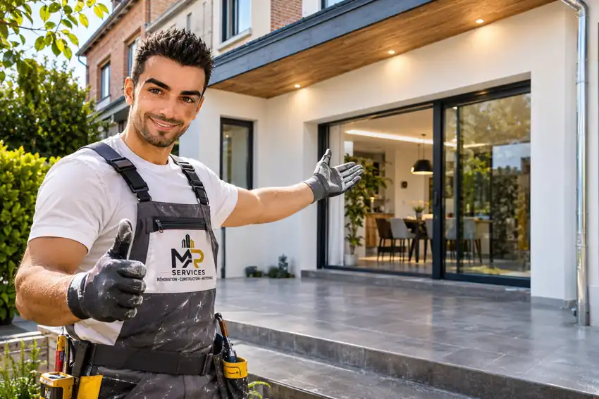

Aménagement intérieur
Gyproc & faux plafonds
Cloisons, faux plafonds, isolation et habillages pour repenser vos espaces.
Découvrir le service ↗Tim vous souhaite la bienvenue chez MP Services. Découvrez les services de Gyproc, peinture, parquet et carrelage à travers des exemples de finitions et parlez-nous de vos travaux à Bruxelles.
Tim est le personnage publicitaire virtuel de MP Services. Visuel créé avec l'intelligence artificielle.

Votre projet, vos contraintes, vos envies
Plusieurs expertises pour vos espaces
Un contact direct et local

Vous recherchez une solution pour vos murs, plafonds, sols ou revêtements ? Découvrez nos prestations à travers des exemples concrets de matériaux, de gestes et de résultats possibles.
Tim vous accueille en page d'accueil, mais ce sont vos besoins et les travaux qui restent au centre du site. Notre équipe étudie directement vos demandes de devis.
Découvrir nos services ↗Voyez les travaux, les matériaux et les finitions. Chaque prestation possède une page avec plusieurs exemples photographiques.
Cloisons, faux plafonds, isolation et habillages pour repenser vos espaces.
Découvrir le service ↗
Préparation des supports, peinture des murs et plafonds, finitions soignées.
Découvrir le service ↗
Pose et rénovation de parquet pour créer une atmosphère chaleureuse.
Découvrir le service ↗
Carrelage pour les sols et les murs, avec une attention portée aux détails.
Découvrir le service ↗
Rafraîchissement des pièces, aménagement et coordination des finitions.
Découvrir le service ↗Remise en propreté des espaces après rénovation et interventions.
Découvrir le service ↗Une transformation réussie commence par un échange simple et des choix adaptés à votre espace.
Ce que le client souhaite voir : détails, matériaux et rendu final. Explorez les exemples avant de choisir votre prestation.
Structure, pose de plaques, préparation et finitions.
Explorer les exemples →Découvrez différentes transformations en faisant glisser le curseur entre avant et après.
Cloisons, plaques et finitions · Simulation IA
Murs et plafonds remis à neuf · Simulation IA
Pose et finition de parquet · Simulation IA
Revêtements de salle de bains · Simulation IA
Une transformation complète · Simulation IA
Simulations visuelles créées par IA : ces images illustrent des résultats possibles. Elles ne représentent pas des chantiers réalisés par MP Services.
Ambiances, matériaux et finitions pour imaginer votre prochain projet.
Une approche claire, depuis votre première prise de contact jusqu'aux finitions.
Vous nous expliquez votre besoin, le lieu et les objectifs.
Nous échangeons sur le périmètre, les matériaux et la faisabilité.
Les travaux sont préparés selon les prestations convenues.
Les interventions et les finitions donnent forme au projet.
Décrivez votre projet, précisez la commune et le type de travaux, puis envoyez votre demande via WhatsApp ou contactez-nous par e-mail. Nous pourrons ensuite échanger sur vos besoins.
Nous intervenons à Bruxelles et dans les environs. Contactez-nous en précisant votre commune pour confirmer la possibilité d'intervention.
Oui. Après l'ouverture de la conversation WhatsApp, vous pouvez joindre directement les photos et les dimensions utiles à votre demande.
Nos prestations comprennent notamment le Gyproc, la peinture, la pose de parquet, le carrelage, la rénovation intérieure et le nettoyage après travaux. Chaque demande est évaluée selon son périmètre.
La galerie Inspiration utilise actuellement des photographies d'illustration sous licence Unsplash. Elle ne constitue pas une présentation de chantiers exécutés par MP Services. Les réalisations vérifiées seront ajoutées séparément.
« Décrivez votre projet, notre équipe prendra le relais ! »
Tim · Ambassadeur virtuel MP ServicesUne envie de rénovation ? Décrivez vos travaux, indiquez votre commune et nous pourrons en discuter.
Écrire directement sur WhatsApp ↗